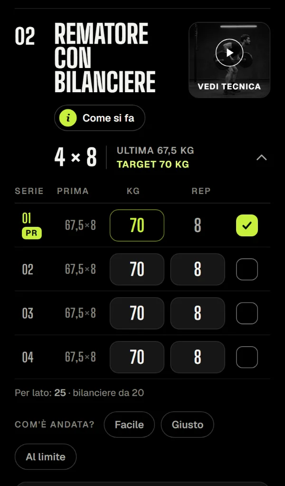
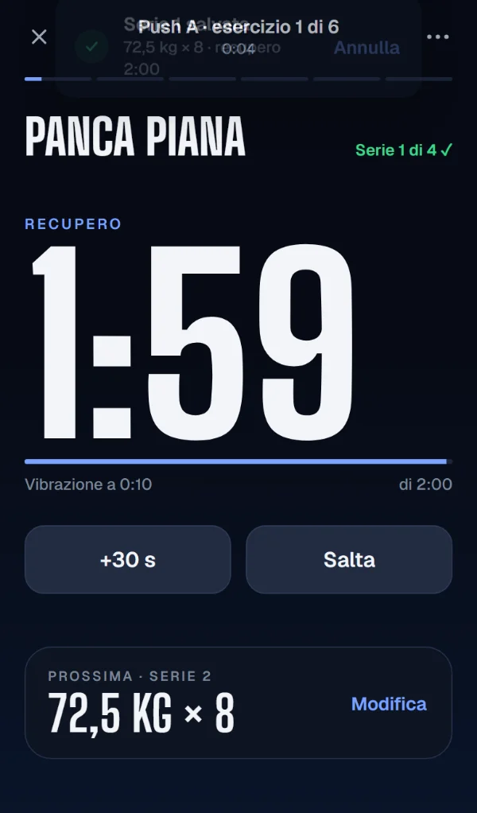
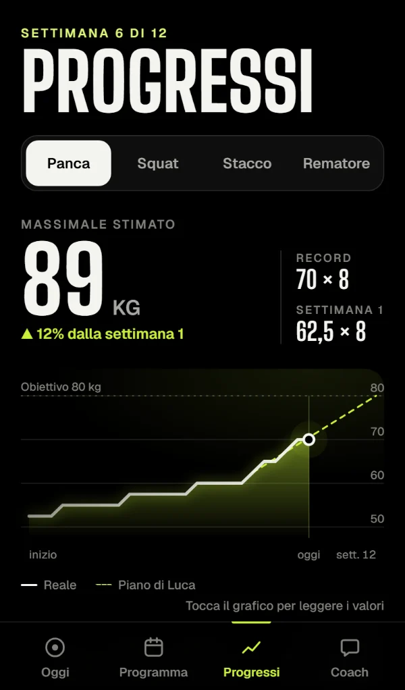
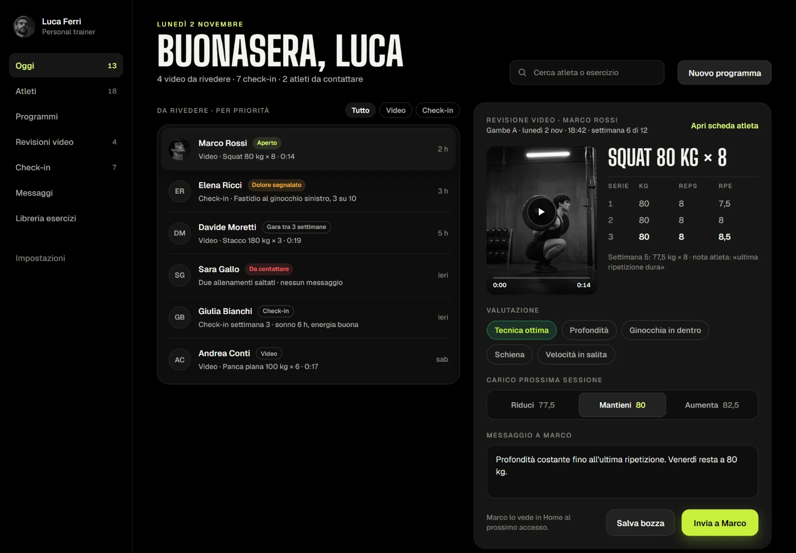
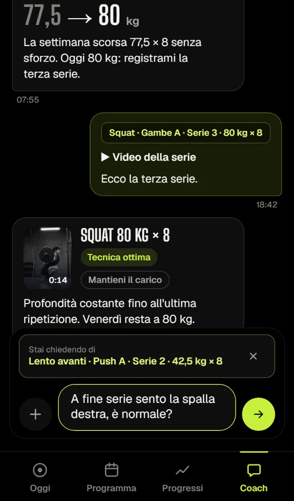

Il carico giusto,
ogni giorno.
Tu scrivi il programma. Il tuo atleta apre l'app e sa subito cosa fare oggi, con quali pesi e come eseguirlo. Tu vedi serie, video e check-in in un posto solo.
Demo senza registrazione · codice di prova LUCA26
Schede in PDF, domande su WhatsApp, video persi in galleria.
Il rapporto con l'atleta si sparpaglia in cinque posti diversi. Tu perdi tempo a ricostruire cosa ha fatto, lui perde la voglia. Carico rimette tutto attorno all'allenamento: ogni serie, ogni video e ogni messaggio sa di che esercizio si parla.
- Una sola appProgramma, registro delle serie, video, check-in e messaggi.
- Contesto sempre attaccatoUna domanda arriva con esercizio, serie e carico già scritti.
- Niente rumoreL'atleta vede una cosa alla volta: l'allenamento di oggi.
Un tocco per serie.
Le serie sono già compilate con il carico deciso da te. Se è andata come previsto basta il segno di spunta: il recupero parte da solo e vibra quando è ora.



Apri il computer, sai chi seguire.
Il gestionale parte da una coda ordinata per priorità: video da rivedere, check-in, atleti che hanno saltato gli allenamenti. Valuti la tecnica, decidi il carico della prossima sessione e scrivi una riga. L'atleta lo trova in Home.

- Revisione in tre tocchiTecnica ottima o da correggere, mantieni, aumenta o riduci, una nota.
- Video richiestoSegni un esercizio e l'atleta sa quale serie registrare.
- Check-in della domenicaAllenamenti, energia e carichi: un minuto per lui, una lettura per te.
Non è un'altra chat.
Da qualsiasi esercizio l'atleta tocca «Chiedi al coach»: il messaggio parte con esercizio, giorno, serie e carico già scritti. Lui scrive solo la domanda, tu rispondi sapendo esattamente di cosa parla.
Lento avanti · Push A · Serie 2 · 42,5 kg × 8A fine serie sento la spalla destra, è normale?

Tre passi, poi si allena.
- Scrivi il programmaGiorni, esercizi, serie, carichi, note e i tuoi video dimostrativi.
- Mandi il codiceL'atleta lo inserisce al primo avvio ed è collegato a te.
- Lo segui davveroSerie registrate, video da rivedere, check-in e messaggi arrivano nel gestionale.
Provala come la proverebbe un tuo atleta.
Apri la demo dal telefono, inserisci il codice LUCA26 e fai un allenamento vero. Poi apri il gestionale dal computer e rispondi come coach.